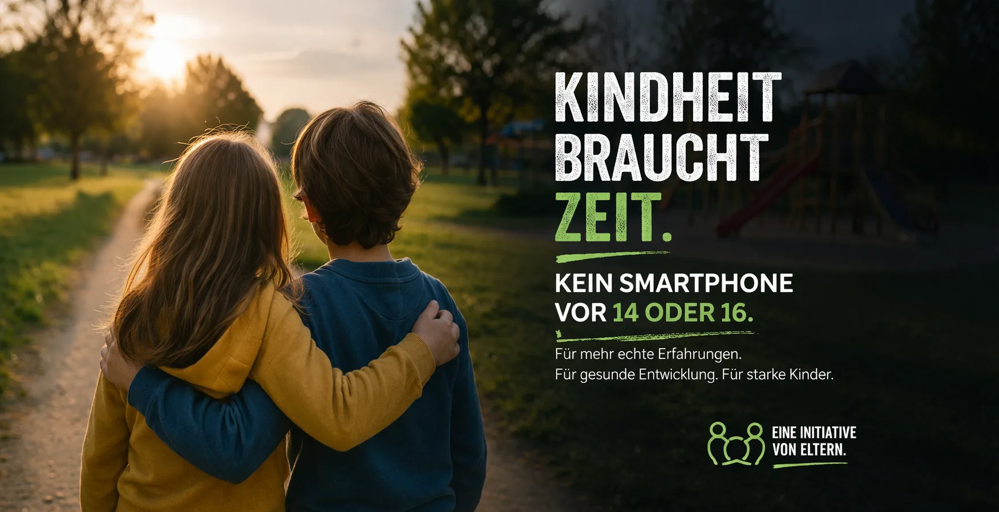

Wir sind Eltern der Montessori-Schule Inning und setzen uns gemeinsam dafür ein, unseren Kindern eine Kindheit ohne Smartphone-Druck zu ermöglichen. Nicht gegen Technik — sondern für bewusste Entscheidungen.
Mach mit!Drei gute Gründe, warum wir als Eltern gemeinsam handeln
Immer mehr Grundschulkinder besitzen ein eigenes Smartphone — oft ab der 3. Klasse. Studien zeigen: Früher Smartphone-Besitz beeinträchtigt Konzentration, Schlaf und soziale Entwicklung. Die Gehirnentwicklung ist erst mit Mitte 20 abgeschlossen.
„Alle anderen haben eins!" — Kinder erleben enormen Gruppendruck. Eltern fühlen sich allein mit der Entscheidung und unsicher: Ist es okay, nein zu sagen? Was, wenn mein Kind ausgegrenzt wird?
Gemeinsam ist es leichter! Wenn viele Eltern einer Klasse sich einig sind, fällt der Gruppendruck weg. Kinder können Kind sein — und wir Eltern unterstützen uns gegenseitig bei bewussten Medienentscheidungen.
Je mehr Familien mitmachen, desto leichter wird es für alle. Aktueller Stand:
Du möchtest, dass deine Klasse auch dabei ist?
Melde dich bei unsHintergrundwissen, Tipps und Unterstützung für Eltern
Wissenschaftliche Erkenntnisse zur Smartphone-Nutzung bei Kindern:
Experten und Pädagogen raten:
Es gibt gute Alternativen, wenn Erreichbarkeit wichtig ist:
Wenn es schwierig wird:
Kommende Veranstaltungen rund um das Thema
19:00 Uhr — Montessori-Schule Inning, Aula. Vortrag und offene Diskussion für alle interessierten Eltern.
10:00 Uhr — Gemeinsam erarbeiten wir einen Medienvertrag, der zu eurer Familie passt.
Hast du Ideen oder möchtest einen Workshop anbieten? Melde dich bei uns!
SmartKidsMontis ist im Frühjahr 2025 aus Gesprächen zwischen Eltern der Montessori-Schule Inning am Ammersee entstanden. Wir haben festgestellt: Viele von uns teilen die gleichen Sorgen rund um Smartphones und Kinder — und die gleiche Unsicherheit.
Aus diesen Gesprächen wurde eine Initiative. Nicht von der Schule, sondern von Eltern für Eltern. Unser Ziel: Gemeinsam eine Umgebung schaffen, in der Kinder ohne Smartphone-Druck aufwachsen können.
Wir sind keine Experten und keine Gegner von Technologie. Wir sind Eltern, die bewusste Entscheidungen treffen wollen — und die wissen, dass das gemeinsam leichter geht.
Materialien zum Herunterladen und Weitergeben